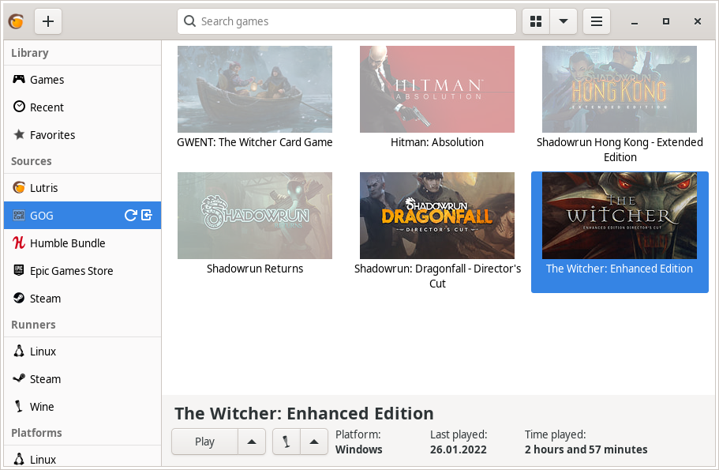
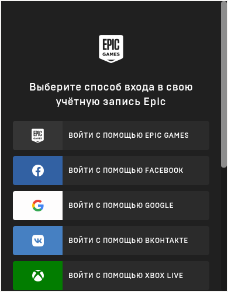

Wine / Linux Gaming#
Основные составляющие#
Переходя к запуску Windows-игр на Linux-системах, сто́ит иметь в виду, что никаких эмуляторов Windows на Linux не существует, и весь запуск осуществляется с помощью сторонней реализации Windows API — Wine/Proton, а также средств ретрансляции команд DirectX в доступные графические API на Linux (Vulkan, OpenGL) с помощью DXVK или иных ретранслятора кода.
Что такое Wine?#
Wine - слой совместимости для запуска Windows-приложений (в том числе игр) из под Linux (Unix-подобных систем). Благодаря нему вы по факту сможете поиграть в большинство игр из вашей библиотеки Steam/GOG/Epic Games Store. Исключением разве что являются игры с встроенными анти-чит системами, хотя благодаря усилиям Valve, в ближайшем будущем, вероятно, это уже не будет являться такой большой проблемой. Конечно, все не так гладко как хотелось бы, ведь для запуска и обеспечения работоспособности многих программ/игр придется ещё изрядно повозиться с его настройкой, однако сама такая возможность в принципе является незаменимой для Linux пользователей, в частности геймеров.
Сборки Wine#
Существуют различные сборки Wine. Подобный зоопарк появился ввиду накопления большого количества различных патчей (сторонних изменений) которые по какой-то причине не могут быть приняты в основную ветку разработки Wine. Кроме того, стоит понимать что, как и в случае с ядрами, обычный Wine это прежде всего свободная реализация Windows API, которая подразумевает запуск любых Windows приложений. При этом он не заточен конкретно под игры или любой другой софт. Именно поэтому в том числе и появились такие вещи как Proton от компании Valve, являющийся по сути тем же Wine, но с упором именно на игровую составляющую, исправляющий многие проблемы обычного Wine связанные с играми.
На текущий момент есть две официальных сборки Wine которые поддерживаются непосредственно разработчиками:
wine - обычная, стабильная версия, содержащая только проверенные изменения от разработчиков, и которая условно универсальна для любых приложений.
wine-staging - содержащая те изменение которые пока не могут попасть в обычную версию, но которые могут помочь исправить определенные баги и улучшить работу конкретных программ и частей Wine.
Но существуют также много альтернативных сборок основанных на Wine-staging с упором именно на игры, о них написано далее.
Установка wine-staging вместе с зависимостями#
Бинарные версии ПО всегда доступны в репозиториях и очень удобны, но они не могут обеспечить достойный уровень производительности. Для начала советуюм поставить wine-staging вместе со всеми зависимостями, а уже затем собрать wine-tkg.
sudo pacman -S wine-staging winetricks wine-mono giflib lib32-giflib libpng lib32-libpng libldap lib32-libldap gnutls lib32-gnutls mpg123 lib32-mpg123 openal lib32-openal v4l-utils lib32-v4l-utils libpulse lib32-libpulse libgpg-error lib32-libgpg-error alsa-plugins lib32-alsa-plugins alsa-lib lib32-alsa-lib libjpeg-turbo lib32-libjpeg-turbo sqlite lib32-sqlite libxcomposite lib32-libxcomposite libxinerama lib32-libgcrypt libgcrypt lib32-libxinerama ncurses lib32-ncurses opencl-icd-loader lib32-opencl-icd-loader libxslt lib32-libxslt libva lib32-libva gtk3 lib32-gtk3 gst-plugins-base-libs lib32-gst-plugins-base-libs vulkan-icd-loader lib32-vulkan-icd-loader
Альтернативные сборки Wine#
По умолчанию обычные сборки Wine недостаточно хорошо заточены для комфортной игры ввиду их универсальности, т.к. это все таки свободная реализация WinAPI в Linux и она не обязана использоваться только для запуска игр из под Windows в Linux. Но существуют также альтернативные сборки Wine, с большим количеством различных патчей и улучшений, нацеленных в основном как раз на игры.
WINE-TKG#
WINE-TKG - это, наверное, лучшая сборка Wine для опытных пользователей которые хотят улучшить свой опыт игры под линуксом. Преимуществом данной сборки перед другими является огромное количество вложенных в неё патчей из разных источников (В том числе портированных из Proton). Поэтому мы настоятельно рекомендуем её к установке если вы хотите получить не только больше производительности, но и совместимости с различными Windows играми.
Установку wine-tkg можно выполнить двумя способами:
Установить из его PKGBUILD как мы это делал ранее с другими программами.
Собрать его полностью вручную из исходников.
Мы выберем первый вариант установки, т.к. он самый простой и надежный.
Второй вариант вы можете осуществить по желанию, особенно если у вас дистрибутив отличный от Arch Linux.
I. Установка
git clone https://github.com/Frogging-Family/wine-tkg-git.git
cd wine-tkg-git/wine-tkg-git
По аналогии с linux-tkg, wine-tkg предоставляет возможность предварительно настроить себя перед установкой на применение различных патчей и твиков через редактирование файла customization.cfg:
nano customization.cfg
Здесь нас интересует не так много настроек. По сути можете оставлять все значения по умолчанию, кроме следующих параметров:
_use_esync="true" - Включает поддержку esync что оптимизирует работу wineserver.
Активируется через переменную окружения WINEESYNC=1.
_use_fsync="true" - Включает поддержку fsync, альтернативу esync которую можно задействовать через переменную окружения WINEFSYNC=1.
Оба параметра обязательны к включению для повышения производительности.
_fsync_futex2="true" - Включает поддержку futex2 для fsync. Улучшает производительность игр при использовании Fsync.
Требуется ядро версии 5.16 и выше.
Подробное сравнение Esync и Fsync можно посмотреть в данном видео.
https://www.youtube.com/watch?v=-nlNJguG5_0&t=18s
_launch_with_dedicated_gpu="false" - Активирует запуск приложений через дискретный графический процессор на ноутбуках с PRIME.
Работает только с открытыми драйверами (Mesa), поэтому выбирайте сами нужно оно вам или нет.
_update_winevulkan="true" - Включает свежие обновления библиотеки winevulkan. Обязательно оставляйте включенным.
_FS_bypass_compositor="true" - Задействует обход композитора приложениями запускаемыми через Wine.
Очень полезная и нужная опция для исправления проблем задержек и заиканий в играх,
в случае когда системный композитор пытается лишний раз осуществить композитинг над окном с игрой запущенной через Wine.
Обязательно включаем.
_proton_fs_hack="true" - Включает еще один очень нужный патч.
Вносит исправление с помощью которого изменяя разрешение игры в полноэкранном режиме у вас не будет изменяться разрешение вашего рабочего стола. Включаем.
_msvcrt_nativebuiltin="true" - Осуществляет нативную сборку mscvrt.dll. Лишним точно не будет, поэтому включаем.
_win10_default="false" - Устанавливает в качестве версии по умолчанию Windows 10 в Wine.
Не рекомендуется к включению в виду того, что это может задействовать vkd3d в некоторых играх работающих на DirectX 12,
что однако ведет к ухудшению производительности по сравнению с DXVK при возможности запустить игру с DirectX 11.
_protonify="true" - Задействует множественные заплатки и патчи для Wine портированные из Proton.
По нашему мнению это маст хев, т.к. они содержат в себе множественные исправления для различных игр и оптимизаций к ним.
Настоятельно рекомендуется к включению.
Внимание
По умолчанию wine-tkg не использует нативные флаги которые вы указывали ранее в /etc/makepkg.conf. Их нужно указать вручную отредактировав wine-tkg-profiles/advanced-customization.cfg:
nano wine-tkg-profiles/advanced-customization.cfg # Отредактируйте строчки ниже
_GCC_FLAGS="-O2 -ftree-vectorize -march=native"
_CROSS_FLAGS="-O2 -ftree-vectorize -march=native"
На этом все, остальные настройки оставьте по умолчанию.
Теперь можно перейти к самой сборке и установке wine-tkg: makepkg -sric
II. Ручная установка
Подробно описывать ручную сборку здесь мы не будем. Поэтому лучше всего посмотрите видео версию, где это наглядно показано (7 минута 23 секунда):
wine-tkg-userpatches#
Это дополнение к wine-tkg. По сути это коллекция пользовательских патчей для улучшения производительности и совместности. Среди них: улучшения работы с памятью, интерфейсом GDI, качества отклика клавиатуры через системные вызовы Futex, повышение приоритета процессов Wine по умолчанию, и другие низкоуровневые изменения от сторонних разработчиков.
Установка:
git clone https://github.com/openglfreak/wine-tkg-userpatches
cd ~/wine-tkg-git/wine-tkg-git
nano wine-tkg-profiles/advanced-customization.cfg # Отредактируйте строчку ниже
_EXT_CONFIG_PATH="~/wine-tkg-userpatches/wine-tkg.cfg"
Пересоберите wine-tkg по инструкции выше.
Никакой дополнительной настройки (редактирования customization.cfg) при этом не требуется.
Proton-GE-Custom#
Proton-GE-Custom это форк проекта Proton для запуска Windows-игр с дополнительными патчами и оптимизациями не вошедшими в основную ветку Proton, а также улучшение совместимости с некоторыми играми (например, Warframe). Позволяет играть во многие проекты которые не заводятся с обычным Wine или Proton.
I. Установка (бинарная версия)::
git clone https://aur.archlinux.org/proton-ge-custom-bin
cd proton-ge-custom-bin
makepkg -sric
II. Установка (компиляция, имеет много зависимостей)::
git clone https://aur.archlinux.org/proton-ge-custom
cd proton-ge-custom
# Нативные флаги + дополнительный патч для DXVK позволяющий улучшить производительность видеокарт NVIDIA
wget -qO proton-ge-aur.patch https://gist.githubusercontent.com/ventureoo/9b89c4799fbc89304f42983c6e90bda0/raw/9f10d463dfecaaa4935be757b48912004c6996fd/proton-ge-aur
patch PKGBUILD proton-ge-aur.patch
makepkg -sric
Дабы использовать Proton-GE в качестве альтернативы обычному Proton, после установки Proton-GE-Custom вам нужно перезапустить Steam и зайти в Свойства нужной вам игры, прожать в: Совместность -> Принудительно использовать определенный инструмент совместности Steam Play -> Proton-6.XX-GE-1. Готово, теперь можно запустить игру.
Использование Wine#
Использование Wine на деле является довольно простым. Чтобы запустить любое Windows-приложение достаточно использовать простую команду:
wine программа.exe
Опасно
НИКОГДА НЕ ЗАПУСКАЕТЕ WINE ИЗ ПОД SUDO/ROOT! Это поможет вам избежать проблем в будущем, в том числе с безопасностью.
Немного иной командой запускаются MSI установщики:
wine msiexec /i программа.msi
При использовании Wine важным понятием является префикс (его также называют бутылкой). Префикс, это как бы файловая система Windows в миниатюре, а по совместительству это рабочая директория, где будут устанавливаться/работать все Windows программы которые вы будете запускать из под Wine. Стоит понимать, что программы запускаемые через Wine по прежнему будут думать что они работают в Windows, хотя на самом деле это не так. Поэтому Wine и понадобилось воссоздать файловую структуру каталогов Windows внутри Linux (Unix). Префикс по умолчанию - это скрытая директория ~/.wine в папке вашего пользователя. Если вы её откроете то увидите следующее:

Как мы видим, в префиксе находятся файлы с расширением .reg (файлы реестра Windows), директории dosdevices и drive_c. Файлы реестра используются Wine для, собственно, воссоздания работы реестра Windows в Linux. К ним также будут обращаться программы запускаемые через Wine. Директория dosdevices содержит символические ссылки на примонтированные устройства (разделы) в вашей системе Linux. Это понадобилось для того чтобы представить их в виде MS-DOS томов, ибо Windows приложения опять таки не знают что они работают под Linux, и им нужны привычные им диски D, E и т.д. Один из таких "виртуальных дисков" располагается в другом каталоге - drive_c (диск C:). Если вы его откроете то увидите "замечательную" структуру каталогов Windows:

Именно сюда и будут устанавливаться все Windows программы и работать они как правило тоже будут именно там.
Вы можете переназначить префикс по умолчанию через переменную окружения WINEPREFIX, указав Wine использовать другую директорию для его расположения вместо ~/.wine. Например:
WINEPREFIX=~/Games wine game.exe # Если директории не было, он её создаст.
Понятное дело, что при смене префикса через переменную окружения WINEPREFIX не переносится его содержимое, т.е. программы установленные в одном префиксе не будут скопированы в новый. Но если вам нужно просто сменить название префикса с сохранением его содержимого, то просто переименуете название директории, а затем переназначьте переменную, например:
mv ~/old_wineprefix ~/new_wineprefix
WINEPREFIX=~/.new_wineprefix wine приложение.exe
Префиксы бывают 32-битные и 64-битные в соответствии с разрядностью систем Windows (по умолчанию создаются 64-битные). Указать разрядность префикса можно через переменную WINEARCH. Для запуска старых видеоигр мы рекомендуем использовать 32-битный префикс во избежание проблем с совместимостью:
WINEPREFIX=~/.wine32 WINEARCH=win32 wine oldgame.exe
Если вы уже создали 64-битный префикс, то переназначить его разрядность через переменную WINEARCH не получится. Создайте новый и перенесите нужную вам программу.
Проверить разрядность уже существующего префикса можно командой (можно также проверить по наличию директории "Program Files (x86)" внутри префикса):
grep '#arch' ~/.wine/system.reg
(Где '.wine' - путь до нужного вам префикса)
DXVK#
В Linux отсутствует полноценная реализация DirectX по вполне понятным причинам. Но присутствуют альтернативные графические API, работающие под любые платформы. Прежде всего это OpenGL и Vulkan. В следствии этого в Wine есть так называемый ретранслятор кода - wined3d. Он переводит вызовы DirectX в известные любой Linux системе OpenGL вызовы. Однако OpenGL не одно и тоже что и DirectX, поэтому возникают множественные проблемы. Самая главная из которых - значительно более худшая производительность OpenGL по сравнению с DirectX. Именно поэтому если вы запустите любую игру через "голый" Wine вы получите ужасный FPS, т.к. она будет работать через wind3d. По этой причине был разработан другой ретранслятор кода - DXVK. Он переводит DirectX вызовы уже не в OpenGL, а в Vulkan - более современный графический API, который достигает паритета по своим возможностям и производительности с DirectX.
Установка DXVK - это первое что должен сделать любой игрок который собирается запустить Windows-игру под Linux. Но для любой версии Proton DXVK уже есть из коробки, а вот для Wine его придется действительно устанавливать вручную.
Мы рекомендуем собирать dxvk-mingw из GitHub для лучшей производительности и активации асинхронного патча. Если чуть подробнее, то данный патч позволяет выполнять компиляцию шейдеров в асинхронных потоках. Такой подход позволяет минимизировать заикания во время игры, которые могут происходить когда вы прогружаете новую локацию или объект на игровой карте, то есть компилируйте новые шейдеры. В некоторых играх он даже немного повышает FPS и делает график времени кадра более плавным. Патч не был одобрен разработчиками потому, что он потенциально вызывал проблемы в онлайн-играх с анти-чит системами, и теперь для него требуется отдельная установка.
Установка::
git clone https://github.com/loathingKernel/PKGBUILDs
cd PKGBUILDs/public/dxvk-mingw
mv PKGBUILD.testing PKGBUILD
sed -i 's/-O3 -march=haswell -pipe -mtune=haswell/-O2 -march=native -mtune=native -pipe/g' PKGBUILD # Нативные флаги
makepkg -sric # Сборка и установка
Активировать асинхронную компиляцию шейдеров можно через переменную окружения DXVK_ASYNC=1.
После установки пакета DXVK не задействуется сразу, его библиотеки ещё нужно "распаковать" по отдельности в каждый префикс Wine (это не относиться к играм запускаемым через Lutris/Proton, в них DXVK включён по умолчанию):
WINEPREFIX=~/prefix setup_dxvk install # Где "prefix" - это путь до вашего префикса Wine
Предупреждение
DXVK осуществляет ретрансляцию вызовов только для игр использующих версии DirectX 9, 10 и 11. Для DirectX 12 для понадобиться использовать vkd3d. Подробнее о нем вы можете прочитать ниже.
Опасно
С осторожностью используйте DXVK_ASYNC=1 в онлайн-играх!
vkd3d#
vkd3d - это ретранслятор кода, аналогичный DXVK, но уже конкретно для версии DirectX 12. Стоит отметить, что существует две отдельно разрабатываемые версии vkd3d, одна из которых разрабатывается командой Wine, а другая - Valve. Мы рекомендуем вам использовать ту что от Valve, т.к. она наиболее заточена под современные игры, а также достаточно хорошо поддерживает Raytracing.
Установка vkd3d-proton
Для Proton и Lutris установка vkd3d задействован по умолчанию, и никаких дополнительных манипуляций обычно не требуется. Однако для обычного Wine нужна его отдельная установка. Мы установим vkd3d-proton из AUR, нативно-скомпилировав его под свой процессор:
git clone https://aur.archlinux.org/vkd3d-proton-mingw.git # Скачивание исходников
cd vkd3d-proton-mingw # Переход в директорию
sed -i 's/-O3 -march=nocona -mtune=core-avx2 -pipe/-O2 -march=native -mtune=native -pipe/g' PKGBUILD # Нативные флаги
makepkg -sric # Сборка и установка
Так же как и в случае с DXVK, после установки пакета, vkd3d нужно предварительно распоковать в нужный Wine префикс:
setup_vkd3d_proton install ~/.wineprefix
(Где '~/.wineprefix' - это путь до нужного вам префикса)
Кроме того, обязательно измените версию Windows вашего префикса на "Windows 10":
WINEPREFIX=~/.wineprefix winecfg

Полезные ссылки по теме Wine и DXVK#
Видео на настройке Бинарной версии Wine.
https://www.youtube.com/watch?v=NKI3dtK7mRI (Устаревшее видео).
Скачать готовые сборки Wine и DXVK
https://mega.nz/folder/pNsTiQyA#2vur9shHbXvLnhdQTpd3AQ
https://mega.nz/folder/IJdEgIrT#wXcbgymIDP2mesJ8kE99Qg
https://github.com/Kron4ek/Wine-Builds
https://mirror.cachyos.org/?search=wine
Почитать, что это такое
Дополнительные компоненты#
Не являются обязательными, но могут помочь повысить производительность системы или облегчить настройку.
Lutris#
Lutris - это удобный графический интерфейс по обслуживанию всей вашей игровой библиотеки (включая все купленные игры Steam/GOG/Epic Games) в одном приложении. Через него вы сможете достаточно просто запускать нативные игры, игры запускаемые при помощи эмуляторов, и конечно Wine. Все это объединено в одном приложении-комбайне, содержащим много настроек и интеграций с различными сервисами.
Установка
Все проще некуда:
sudo pacman -S lutris
Тем не менее, стоит удостовериться что вы установили полный набор зависимостей для Wine. Об этом вы можете прочитать в предыдущих разделах.

Интеграция с GOG/Epic/Steam
Сразу после установки стоит сделать некоторые базовые вещи. А именно подключить интеграцию с сервисами Steam/GOG/Epic Games. Это позволит синхронизировать локальную библиотеку Lutris'a вместе с перечисленными площадками и выполнять установку игр в два клика. Подключать все конечно не обязательно, так что делайте это если считаете нужным.
1. Зайдем в настройки: В правом верхнем углу найдите три горизонтальные полоски и в контекстном меню выберите "Preferences". После этого выберите "Services" и включите те сервисы, которыми вы пользуетесь.
1.1

1.2

2. Теперь вернитесь в главное окно и наведите курсор на левую панель в графу "Sources", и ниже выбирите нужную вам платформу. Справа от курсора будет иконка входа. После этого перед вами появится окно авторизации, после прохождения которой у вас появится возможность устанавливать и запускать все игры из вашей внешней библиотеки (Steam/GOG/Epic Games).
Пример подключения аккаунта GOG представлен ниже на скриншотах.
2.1
2.2

2.3
Аналогичная операция проделывается с Epic Games Store:
2.4
2.5
2.6

Пример работы с Lutris
https://www.youtube.com/watch?v=ybe0MzJDUvw
Использование Proton-GE-Custom в Lutris#
Немногие понимают, что Proton по сути является тем же Wine, хоть и с плюшками. Так вот, зная этот факт, мы можем сказать Lutris использовать Proton в качестве кастомного Wine. Делается это очень просто:
mkdir -p ~/.local/share/lutris/runners/wine
ln -s /usr/share/steam/compatibilitytools.d/proton-ge-custom/files ~/.local/share/lutris/runners/wine/wine-proton-ge
Затем просто выберите пункт в выборе версии Wine на "wine-proton-ge" в Lutris для нужной вам игры.
Gamemode#
Gamemode - утилита для максимальной выжимки системы во время игры. Установку gamemode можно выполнить следующей командой:
sudo pacman -S gamemode lib32-gamemode
Lutris, как правило использует gamemode по умолчанию (в случае его наличия в системе), однако вы также можете активировать или деактивировать его в параметрах.
Для запуска игры в ручную с использованием gamemode необходимо выполнить команду:
gamemoderun ./game
Для запуска игр через Steam с использованием gamemode необходимо прописать команду в параметрах запуска игры (находятся в свойствах игры в Steam):
gamemoderun %command%
AMD FidelityFX Super Resolution в Wine#
Возможно, вы слышали о волшебной технологии DLSS от Nvidia, которая позволяет поднять FPS почти в два раза и при этом не потратить ни копейки на новое оборудование. Вот и компания AMD совсем недавно представила похожую технологию, которая получила помпезное название AMD FidelityFX Super Resolution или сокращенно FSR. Новая технология масштабирования картинки от AMD не требует наличия дорого́й карты или каких-то аппаратных блоков ускорения, что в отличие от DLSS, должно позволить использовать технологию везде и совершенно бесплатно. А благодаря чудесным патчам от энтузиастов для Wine мы можем применять эту волшебную технологию для любой Windows-игры.
I. Установка
Чтобы установить патч от энтузиастов придется немного помудрить с нашим wine-tkg.
Его установка описывалась выше, но чтобы задействовать сторонний патч на FSR в Wine нужно отредактировать одну строку в customization.cfg:
nano customization.cfg
# Найдите строчку _community_patches="" и добавьте в неё следующее:
_community_patches="amd_fsr_fshack.mypatch"
# Обязательно оставьте при этом включенными данные параметры:
_protonify, _msvcrt_nativebuiltin, _proton_fs_hack, _proton_rawinput.
Без них ничего работать не будет.
И пересоберите ваш wine-tkg: makepkg -sric
II. Установка
Если вам кажется первый способ немного муторным, то вы можете просто использовать уже готовые сборки с FSR патчем в Lutris:

И затем выбрать её для нужной вам игры:

III. Установка
FSR патч также по умолчанию задействован в Proton-GE-Custom. Про его установку вы можете прочитать ниже в соответствующем разделе.
Как использовать
Несмотря на то, что мы выполнили установку патченной версии Wine одним из вышеописанных способов, технологию FSR ещё нужно активировать.
Сделать это можно руками, через переменные окружения WINE_FULLSCREEN_FSR=1 или в Lutris:

Важно помнить, что эта технология работает только в полноэкранном режиме игры.
Регулировать резкость итогового изображения можно через переменную окружения WINE_FULLSCREEN_FSR_STRENGTH=N, где N - это уровень резкости изображения от 0 до 5. Чем выше значение, тем меньше резкость. По умолчанию установлено значение "2", мы рекомендуем использовать значение "3".
Видеоверсия и демонстрация работы технологии
Использование DLSS с видеокартами NVIDIA через Proton#
Для того чтобы использовать DLSS вам потребуется:
Видеокарта поддерживающая данную технологию (видеокарты серии RTX и выше).
Убедиться, что используемая версия Proton не ниже 6.3-8! (поддержка DLSS начинается с данной версии!)
Указать параметры запуска игры в свойствах игры Steam
PROTON_HIDE_NVIDIA_GPU=0 PROTON_ENABLE_NVAPI=1Некоторые игры, как правило, которые используют DX11, для корректной работы могут также потребовать включения dxgi.nvapiHack = False в dxvk.conf. Для этого выполните инструкции ниже:
mkdir -p ~/.config/dxvk/dxvk.conf echo "dxgi.nvapiHack = False" > ~/.config/dxvk/dxvk.conf
После этого не забудьте дописать DXVK_CONFIG_FILE=~/.config/dxvk/dxvk.conf в приведённом ниже примере перед
%command%.
Пример для использования в Steam:
PROTON_HIDE_NVIDIA_GPU=0 PROTON_ENABLE_NVAPI=1 %command%
Внимание
Поскольку для DLSS необходимо специальное машинное обучение, то для запуска необходимо чтобы игра поддерживала DLSS, т.е. в настройках игры должен быть параметр включения данной функции. Иначе DLSS работать не будет!
Мониторинг FPS в играх.#
Mangohud#
Включение мониторинга в играх как в MSI Afterburner.

Установка
cd tools # Переход в заранее созданную папку в домашнем каталоге.
git clone https://aur.archlinux.org/mangohud.git # Скачивание исходников.
cd mangohud # Переход в mangohud.
makepkg -sric # Сборка и установка.
Графический помощник для настройки вашего MangoHud.
cd tools # Переход в заранее созданную папку в домашнем каталоге.
git clone https://aur.archlinux.org/goverlay.git # Скачивание исходников.
cd goverlay # Переход в goverlay-bin
makepkg -sric # Сборка и установка.
Для использования mangohud в играх через Steam необходимо добавить команду в параметры запуска игры (находятся в свойствах игры Steam):
mangohud %command%
(Для указания нескольких команд необходимо разделять их пробелом)
Подробней в видео.
Альтернатива: DXVK Hud (Только для игр запускаемых через Wine/Proton)#
Вы также можете использовать встроенную в DXVK альтернативу для мониторинга - DXVK Hud.
Он не такой гибкий как MangoHud, но также способен выводить значения FPS, график времени кадра, нагрузку на GPU.
Использовать данный HUD можно задав переменную окружения DXVK_HUD.
К примеру, DXVK_HUD=fps,frametimes,gpuload выводит информацию о FPS, времени кадра, и нагрузке на GPU.
Полный список значений переменной вы можете узнать - здесь.